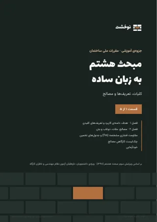
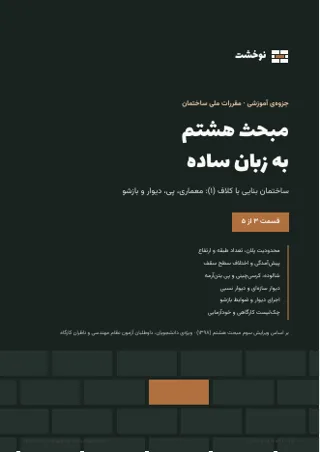
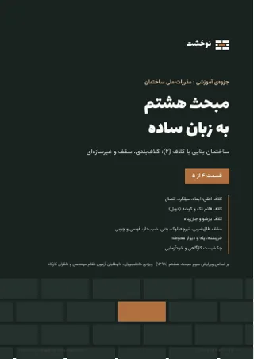

قسمت ۱ · فصل ۱ و ۲کلیات، تعریفها و مصالح
آجر، بلوک، سنگ، ملات، دوغاب، بتن، f'm و جدولهای تخمین.
دانلود PDF ← قسمت ۲ · فصل ۳ضوابط عمومی
درز انقطاع، لاغری، بازشو، نعلدرگاه، تیغه، پله، جانپناه، عایق رطوبتی.
دانلود PDF ←
قسمت ۳ · فصل ۵بنایی با کلاف (۱)
محدودیت طبقه و پلان، شالوده و کرسیچینی، دیوار نسبی، اجرای دیوار، بازشو.
دانلود PDF ←
قسمت ۴ · فصل ۵بنایی با کلاف (۲)
کلاف افقی و قائم، کلاف دوبل، کلاف بازشو، سقف طاقضربی، تیرچهبلوک و چوبی.
دانلود PDF ← قسمت ۵ · فصل ۴بنایی مسلح
میلگردگذاری، مقاومت نهایی، ضرایب φ، تیر، ستون، جرز، دیوار و المان مرزی.
دانلود PDF ←این جزوه خلاصهای آموزشی است که با زبان خودمان نوشتهایم و جایگزین متن رسمی مبحث هشتم نیست. برای طراحی، اجرا و آزمون، همیشه به متن کامل مبحث مراجعه کنید. انتشار رایگان با ذکر منبع آزاد است.
برای مدلسازی، تحلیل یا برداشت وضع موجود پروژهتان کمک لازم دارید؟